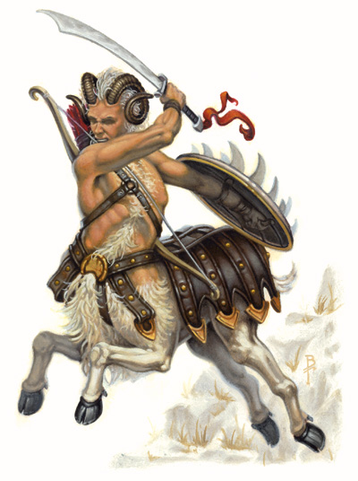

半人羊 Bariaurs
作为约瑟园的土著生物，半人羊就像半人马一样在波浪般的丘陵与翠绿是树木下徘徊，搜寻着邪恶的踪迹。每当半人羊发现恶人，他们就会冲入光荣的战斗中。

种族特性：
半人羊角色有如下种族特性：
l+2力量，-2魅力：半人羊实力拔群，但他们不懂得社交技巧
l异界生物：半人羊是生活在约瑟园之英雄领域的异界生物。当他们不在约瑟园时会获得跨位面亚种（extraplanar
subtype）。他们不受仅影响类人生物的法术或能力，如魅惑人类和支配人类
l中型体型：作为中型体型的生物，半人羊没有体型上的加值或者减值。
l半人羊的基本速度为40尺。
l半人羊拥有60尺黑暗视觉。
l四足：因为有四条腿，半人羊在对抗冲撞和摔绊时获得+4加值，负重能力为标准的1.5倍。同时它必须装备马匹盔甲代替普通盔甲，而且不能穿任何为类人生物设计的鞋子
l强力冲锋：冲锋的半人羊可以用他的角做单独一次抵撞攻击，造成2d6+1.5倍力量调整值的伤害。
l法术抗力：半人羊拥有11+职业等级的法术抗力
l在对抗法术及类法术能力时意志获得+2种族奖励
l在聆听和侦查上获得+2种族奖励
l起始语言：天界语、通用语
l额外语言：深渊语、炼狱语，半人羊通常学习这些语言以便更好的对抗邪恶生物
l偏好职业：巡林客
l等级调整：+1
扮演半人羊
性格：对那些不熟悉他们的人来说，半人羊看起来无忧无虑甚至有些不负责任。但这仅仅是他们漫游癖的外在表现。相比安稳生活，他们更宁愿旅行。每当邪恶的迹象出现，他们的懒散就会被对邪恶一心一意的追猎所取代。
体型与外貌：半人羊形似半人马，身高约比人类约半英尺。他的下半身是一只长着蹄子，拥有棕色或金色光滑皮毛的公羊。上身则是一个肌肉发达的人类，还顶着如羊的犄角。半人羊的肤色从浅棕色到深棕色都有。典型的男性半人羊体重约300磅，而女性则比男性轻上40磅。半人羊成年的年龄与半精灵相近，最年长的半人羊则可以活到超过200岁。
与其它种族的关系：半人羊外向而爱好社交，但不会愚蠢的全盘信任他人。他们与精灵、侏儒、半身人、蛮獾还有那些不会对他们很严厉的阿斯莫相处得很好。他们勉强能接受矮人作为对抗邪恶的盟友。半精灵与半兽人这些混血儿则是半人羊好奇的对象。他们对诸如提夫林和迅影裔这些拥有阴影与邪恶位面血统的生物保有适当的怀疑，但他们通常以善意的想法待人，直到被证明这是错误为止。
阵营：作为崇尚自由的生物，大多数半人羊都是混乱善良的。一些更稳定的半人羊倾向于中立善良阵营，还有更少的一些则从纯粹的善良走向中立。邪恶的半人羊极其罕见，总是躲避着羊群行事。
宗教：半人羊相比其他神祗，更多崇拜森林女神艾罗娜。一些半人羊会崇拜力量之神寇德或太阳神培罗。
语言：半人羊没有自己的语言，他们绝大部分场合都说天界语。与其它种族交谈时也会使用通用语。
姓名：半人羊的名字由他父母所起。通常是简单的、一个或两个音节的名字（便于在约瑟园的山丘上喊出）。在羊群中，他会在自己的名字后加上“xx（父亲的名字）之子”（如果是女性则为“xx（母亲的名字）之女”）来表明他的出身。在羊群外则会使用羊群名来表明他所属的群落。羊群名描述的是被羊群所喜爱的环境，并且可以随着时间推移而改变。
男名：贝克斯，豪，杰克，莫尼克，约尔，维克（Bex, Hul, Jek, Menok, Ril, Wyk）
女名：蒂斯，哈什，赛斯，泰，瓦希（Daeth, Hysh, Saph, Tyth, Vash）
羊群名：苜蓿原野，观谷者，丘陵漫步者，踏林人
冒险者：半人羊的漫游癖会使他成为理想的冒险家。虽然离开羊群会是个困难的决定，但一个追求在多元宇宙中抗击邪恶生物的年轻半人羊大多数会在冒险队里找到一席之地。半人羊经常成为巡林客，但野蛮人和战士也并不少见。
――――――――――――
边栏：半人羊与高等半人羊
这本书中写到的半人羊是该种族最常见的一类，《崇善之书》中写到了更强大的半人羊通常被称为“高等半人羊”，因为他们与天界位面的联系更紧密。